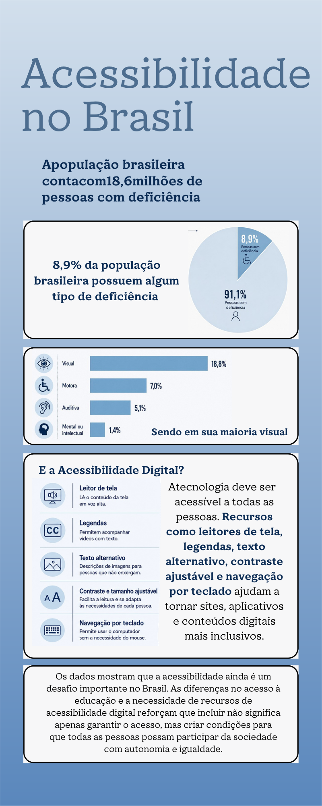

Vídeo 1: [Título do Primeiro Vídeo]
Descrição: Apresentação gravada pelos alunos sobre o tema do trabalho.
Transcrição / Legenda em Texto
[Cole aqui a transcrição do áudio falado no vídeo para acessibilidade.]
Querido professor, quero agradecer de coração por todo o apoio, paciência e orientação ao longo deste projeto. Sua ajuda foi fundamental para que eu conseguisse superar os desafios e chegar até aqui, e sou muito grato(a) por ter contado com a sua dedicação e incentivo em cada etapa.
[Insira aqui o texto introdutório do seu trabalho. Explicar a contextualização do tema, os objetivos principais da pesquisa e a justificativa do estudo.]
[Adicione parágrafos adicionais conforme a necessidade da apresentação.]
Um cão-guia é um animal de serviço altamente treinado para guiar e garantir a mobilidade de pessoas cegas ou com baixa visão. Considerado uma tecnologia assistiva viva, ele transforma a forma como o usuário interage com o espaço urbano, permitindo deslocamentos rápidos, fluidos e seguros.Abaixo, veja como funciona o trabalho desses animais, o cenário atual dessa modalidade e o impacto direto na acessibilidade visual: 🐕 O papel do cão-guia na locomoção Diferente da bengala de orientação, que detecta obstáculos por meio do toque físico estrutural, o cão-guia antecipa as situações com o uso da visão e do raciocínio:Desvio dinâmico: Ele desvia de barreiras aéreas (como galhos de árvores e placas de trânsito) e de bloqueios no chão (como buracos ou entulhos), calculando o espaço necessário para que ele e o tutor passem juntos.Sinalização de desníveis: O cão para obrigatoriamente diante de calçadas, degraus, faixas de pedestre e escadas, funcionando como um aviso tátil para o usuário.Busca por alvos: Sob comandos verbais, o animal localiza portas de entrada, balcões de atendimento, assentos vazios em transportes públicos e botões de elevador.Desobediência inteligente: É uma das habilidades mais complexas. O cão é treinado para ignorar um comando de avançar caso perceba um perigo que o tutor não notou, como um carro silencioso avançando a preferencial.
[Desenvolvimento do segundo tópico principal. Pode conter análises, subitens ou explicações complementares.]
[Desenvolvimento do terceiro tópico principal do trabalho.]


Descrição: Apresentação gravada pelos alunos sobre o tema do trabalho.
[Cole aqui a transcrição do áudio falado no vídeo para acessibilidade.]
Descrição: Demonstração complementar em vídeo.
[Cole aqui a transcrição em texto do segundo vídeo.]
[Resumo dos resultados obtidos, considerações finais do grupo e aprendizados principais desenvolvidos ao longo da elaboração deste trabalho.]